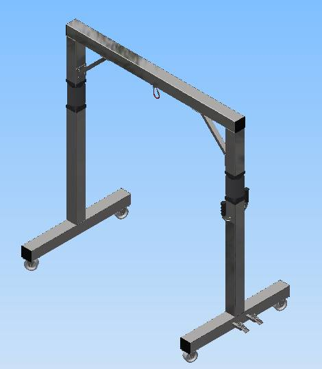
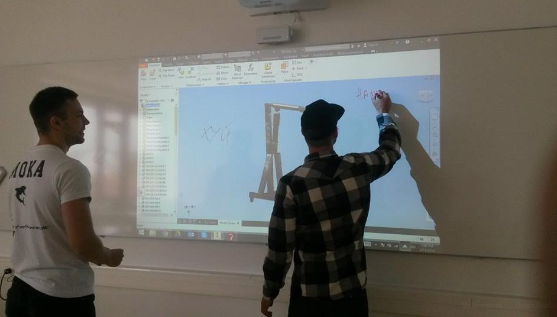

IDEA
For our ideation process we have used different tools such as brainstorming, mind map, sketching, field research.

After using different tools and having discussed opportunities for a design, we narrowed down to a first draft for a design. We went and created our prototype idea in inventor. After we had made a first draft of the design we agreed on, our company went to a hospital to investigate further on some questions that had arisen from our first attempted design process.
The field research was mainly regarding what products the hospitals already used. This was relevant because in order to stand any chance as a company within this market, we would have to somehow differentiate from the products already on the market. Furthermore, we had to investigate specific measurements such as how wide are the doors in the hospitals etc. Lastly, we wanted to talk to some nurses who already used the machines to hear whether they had any suggestions for improvements in the products. These suggestions would possibly be something we could try and implement to our own design.
{kind=link}
Research
We went to Faarsø hospital and interviewed a nurse called June, she also had the title “lifting instructor”. The most important information we could take with us from the interview was:
- The legs of the machine should be able to split so that it can assist a person who is lying on the ground or sitting in a chair.
- A lock button is required (or simple just a locking mechanism on the wheels).
- The ability to hold a person weighing up to 300 kg is more than sufficient.
- Suggestions from June in regards to improvement was: Better wheels and easier to manoeuvre around.
- The hospital in Faarsø has 3 of these patients lifts, the main lift used is a loft lift, which is a tool that is regarded as being the superior tool for most of the patient tasks at the hospital. The 3 Viking XL patient lift they have are mainly used when helping patients who has fallen on the corridors.
Evaluation

The field research provided us with information to conclude that our lifting device resembled the one they use at the hospital. And it might possible not even be better than this device, though there was room for improvement.
Therefore, we evaluated on all the information and research we had done so far and then we agreed that we would have to take a step back and try to come up with ideas for a new design in order to differentiate our product from what they already used at the hospital.
Now our second draft for a design began. We had found at the hospital that they used two different machines, “the 30y” and “the 40x”. After looking at these machines we discussed how we thought we could possible make one of them better or maybe even combine the properties. In this process we once again used a mindmapping tool (adding to our already created mindmap) and making new sketches by hand to get a visual on how it could look.
{kind=link}
Develop/Design
Our second draft of the product ended up being the develop/design phase because we agreed on a design and some properties that we now aimed towards getting as close to as possible.
The main goals were for the product to be a patient lift that could compete with the one they already used at the hospital, but if possible, we wanted ours to be better by having really good wheels and maybe some sort of increased ability to maneuver. We also had thoughts about mixing up properties so that our final design, if possible, had some sort of armrest for the patient, which would be the option of some sort of rehabilitation.
Eventually, we ended up with the best possible design we could create in inventor. We tried to reach most of our goals but had to realize that not all of our ideas were as easy to create as we hoped.